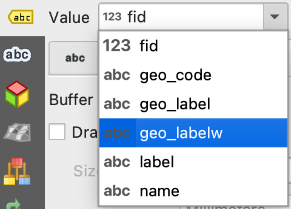

1 Dechrau arni
Dyddiad yr ymarfer: 2 Hydref 2025
I feistroli QGIS, rhaid dechrau gyda’r pethau sylfaenol. Mae’r ymarfer hwn yn cyflwyno’r sgiliau sylfaenol a fydd yn sail i weddill y modiwl hwn a thu hwnt - gan gynnwys eich traethawd hir. Cymerwch eich amser, gofynnwch gwestiynau, a gwnewch yn siŵr eich bod yn hyderus gyda phob cam cyn symud ymlaen.
2 Nodau dysgu
I ddod yn gyfarwydd â’r amgylchedd Quantum GIS (QGIS) ar gyfer delweddu a phrosesu data geo-ofodol. Byddwch yn dysgu sut i agor gwahanol fathau o haen ddata, addasu’r ffordd maen nhw’n edrych, archwilio eu priodoleddau, a dewis nodweddion i’w dadansoddi ymhellach.
2.1 Cychwyn
Gwiriwch fod hyn yn gweithio: Ewch i OneDrive ar y we (onedrive.live.com neu’ch porth gwaith/ysgol). Llywiwch i Rhannu yn y bar ochr chwith, yna dewch o hyd i’r ffolder a rennir gyda chi. Agorwch y ffolder a chliciwch ar Syncio yn y bar offer uchaf. Bydd hyn yn lawrlwytho ac yn syncio’r ffolder i’ch cyfrifiadur, a bydd yn ymddangos yn File Explorer o dan eich adran OneDrive
Lansio
QGIS. Gallai hyn fod ar gyfrifiadur Prifysgol, drwy benbwrdd o bell, neu ar eich cyfrifiadur eich hunO’r bar dewislen, cliciwch ar
Prosiect>Newydd. Dewch o hyd i’r eicon llwybr byr i greu prosiect newyddYchwanegwch eich haen fector gyntaf yn QGIS. O’r bar dewislen, cliciwch ar
Haen>Ychwanegu Haen>Ychwanegu Haen Fector...Cliciwch yr eicon
Pori( ) ac ewch i’r ffolder lle mae’r data wedi’i storio, h.y.
) ac ewch i’r ffolder lle mae’r data wedi’i storio, h.y. GEG276Agorwch y ffolder
British_Isles_land_polygonsa chliciwch ar yr haen fector.gpkggyfatebolCliciwch
Agor>Ychwanegu>Cau. Mae’r set ddata hon o’r prosiect OpenStreetMap yn cynnwys polygonau sy’n cynrychioli’r nifer o ynysoedd sy’n ffurfio Ynysoedd Prydain. Sylwch fod yr haen bellach wedi’i rhestru o dan y panelHaenau. Gallwch hefyd lusgo a gollwng setiau data o’r porwr yn syth i’r Cynfas Map.

2.2 Llywio
- Defnyddiwch y
Bar Offer Llywio Mapi archwilio’r set ddata hon drwy symud a chwyddo

Rhowch gynnig ar ddefnyddio olwyn sgrolio’r llygoden fel llwybr byr
Ymgyfarwyddwch â llywio o amgylch y Cynfas Map trwy golli’ch hun! Paniwch a chwyddo nes na allwch weld haen Ynysoedd Prydain mwyach
Ar ôl colli, cliciwch ar y dde ar yr haen yn y panel
Haenaua chliciwch arChwyddo i Haen(au)i ddychwelyd yn hawdd i weld yr haen honno.
2.3 Addasu priodweddau arddull
O’r panel
Haenau, cliciwch ar y dde arPolygonau_Ynysoedd_Prydeiniga chliciwch arPriodweddau...>Symboleg. Llwybr byr defnyddiol iPriodweddauyw clicio ddwywaith ar yr haen.Cliciwch ar
Simple Fillac arbrofwch gyda newid lliwiau, arddulliau a lledau symbolaeth yr haen. Mae gennych reolaeth lwyr dros sut mae haenau fector yn ymddangos. Wrth ddylunio map, ystyriwch yn ofalus sut i ddewis arddull briodol ar gyfer pob haen

- O’r bar dewislen, cliciwch ar
Prosiect>Cadwa chadwch eich prosiect i leoliad addas. Dewch o hyd i’r llwybr byr. Cofiwch gadw’n rheolaidd o hyn ymlaen!
2.4 Mesur gwrthrychau geo-ofodol
- Cliciwch y saeth ostwng wrth ymyl yr eicon
Mesuri ddewis yr offeryn priodol ar gyfer mesur:
- Hyd Prydain Fawr (mewn milltiroedd)
- Arwynebedd bras Ynys Manaw (mewn cilometrau sgwâr)

Defnyddiwch y clic chwith i ychwanegu pwyntiau, a chlic dde i roi’r gorau i gymryd y mesuriadau hyd / arwynebedd
Rhannwch eich atebion ar Menti! Mae gallu mesur nodweddion daearyddol yn amcan sylfaenol o ddadansoddi GIS
2.5 Archwilio’r Tabl Priodoleddau
- O’r panel
Haenau, cliciwch ar y dde arPolygonau_Ynysoedd_Prydeiniga chliciwch arAgor Tabl Priodoleddau
Mae tabl priodoleddau yn rhan sylfaenol o bob set ddata GIS. Mae pob rhes o’r tabl yn cyfateb i un nodwedd (e.e. polygon) o’r haen fector, ac mae pob colofn, neu briodoledd (y gall fod cymaint ohonynt ag sydd eu hangen), yn cofnodi priodwedd o’r nodwedd (e.e. enw, arwynebedd, cylchedd). Mae gan yr haen ddata benodol hon ddau briodoledd: fid (dynodwr maes) ac Arwynebedd.
- Trefnwch ffenestri’r Canfas Map a’r tabl priodoleddau fel y gallwch weld y ddau ar y sgrin ar unwaith. I ddeall sut mae’r tabl priodoleddau’n cyfateb i’r haen fector:
- Trefnwch y tabl priodoleddau yn ôl arwynebedd pob polygon drwy glicio ar deitl y golofn
Arwynebedd. Bydd cliciau dro ar ôl tro yn trefnu’r gwerthoedd yn ôl esgyn neu ddisgyn. - Cliciwch ar rif rhes i ddewis y polygon y mae’n cyfateb iddo. Mae’r polygon a ddewiswyd yn y Canfas Map bellach wedi’i amlygu’n felyn.
- Cliciwch yr eicon
Chwyddo map i'r rhesi a ddewiswydyn y gornel dde uchaf ( ) i chwyddo i’r polygon a ddewiswyd yn y Cynfas Map
) i chwyddo i’r polygon a ddewiswyd yn y Cynfas Map

Ailadroddwch y cam uchod i archwilio deg ynys fwyaf Ynysoedd Prydain. Allwch chi enwi’r seithfed fwyaf? Os felly, cyflwynwch ef ar Menti!
Gallwch hefyd ddewis nodweddion yn y Canfas Map i nodi eu priodoleddau cyfatebol yn y tabl priodoleddau:
- Cliciwch yr eicon
Dewis Nodweddion( )
) - Dewiswch (amlygwch mewn melyn) Ynys Wyth
- Yn y tabl priodoleddau, cliciwch yr eicon
Symud y detholiad i'r brig( ) i symud y llinell a ddewiswyd o’r tabl i’r brig
) i symud y llinell a ddewiswyd o’r tabl i’r brig - Darllenwch arwynebedd y nodwedd - sydd mewn metrau sgwâr - a’i drosi i gilometrau sgwâr (h.y. rhannwch â 1,000,000)
- Adroddwch eich canlyniad ar Menti!
- Cliciwch yr eicon
Dad-ddewis nodweddion( ) i ddad-ddewis y detholiad cyfredol. Bydd y swyddogaethau hyn yn ddefnyddiol iawn yn ddiweddarach.
) i ddad-ddewis y detholiad cyfredol. Bydd y swyddogaethau hyn yn ddefnyddiol iawn yn ddiweddarach.
2.6 Trefnu haenau
Ychwanegwch yr haen
Wales_Principal_Areas.gpkgyn y ffolderUK_Boundariesi’ch prosiect. Mae’r set ddata hon yn cynnwys polygonau sy’n cynrychioli Prif Ardaloedd (a elwir hefyd yn siroedd) Cymru. Noder y bydd yr haen hon hefyd yn ymddangos yn y panelHaenauAddaswch arddull yr haen hon ac archwiliwch ei thabl priodoleddau
Arbrofwch gyda newid gwelededd haen ymlaen neu i ffwrdd gan ddefnyddio’r blychau ticio yn y panel
Haen( ). Daw hyn yn hanfodol wrth reoli haenau lluosog mewn prosiect
). Daw hyn yn hanfodol wrth reoli haenau lluosog mewn prosiectNewidiwch drefn yr haenau drwy lusgo pob un i fyny neu i lawr yn y panel haenau
Sylwch sut mae ffin wleidyddol (Prif Ardal) Cymru tua’r môr yn mynd y tu hwnt i’r arfordir (Polygonau Tir). Mae hyn oherwydd bod y ffin tir ffisegol fel arfer yn cael ei dosbarthu yn ôl y marc penllanw cymedrig, tra bod ffiniau gweinyddol fel arfer yn cael eu dosbarthu yn ôl y marc distyll cymedrig. Dyna Ddaearyddiaeth!
Symudwch
Ardaloedd_Egwyddor_Walesi frig y panelHaenauAgor ffenestr
Symbolegyr haenDefnyddiwch y ddewislen ostwng i newid ffynhonnell y symboleg o
Symbol SengliWedi'i Gategoreiddio

Defnyddiwch y ddewislen ostwng
Gwerthi ddewis y priodoleddenwCliciwch
Dosbarthu>Iawn. Mor lliwgar!
2.7 Labelu haenau
Dewiswch yr haen
Wales_Principal_Areasyn y panelLayersO’r bar dewislen, cliciwch ar
Haen>Labelu. Dewch o hyd i’r llwybrau byr i’r ffenestr hon (awgrym - edrychwch arPriodweddau...)Defnyddiwch y ddewislen ostwng i newid y ffynhonnell labelu o
Dim LabeliiLabeli Sengl

- Newidiwch y ddewislen ostwng
Gwerthi labelu polygonau Prif Ardal Cymru yn ôl eu henwau Saesneg neu Gymraeg

- Arbrofwch gyda newid y labeli drwy:
- Newid arddull y testun (
 ) e.e. arddull a maint
) e.e. arddull a maint - Newid fformat y label (
 ) e.e. lapio a chyfeiriadedd
) e.e. lapio a chyfeiriadedd - Ychwanegu byffer testun (
 )
) - Newid lleoliad y label (
 )
) - Chwarae o gwmpas gyda dewisiadau eraill. Rydych chi mewn rheolaeth lwyr!
- Ydych chi wedi cadw eich prosiect yn ddiweddar?
Nawr bod y Prif Ardaloedd wedi’u labelu, chwyddo allan. Sylwch sut mae QGIS yn dewis gosod a newid maint y labeli fel eu bod yn parhau i fod yn weladwy, ond yn diffodd rhai ohonynt i osgoi testun sy’n gorgyffwrdd. Mae hwn yn rhan sylfaenol o ddylunio mapiau ac mae QGIS yn ceisio optimeiddio darllenadwyedd. Gallwch reoli’r ymddygiad hwn trwy’r ffenestr Labelu ac fe’ch anogir i arbrofi.
2.8 Ychwanegu a hidlo data
Ychwanegwch yr haen fector
Wales_operational_windfarms.gpkgat eich prosiect. Daw’r data hyn o Gronfa Ddata Cynllunio Ynni Adnewyddadwy’r DU ac maent yn cynrychioli lleoliad ffermydd gwynt gweithredol ledled Cymru.Archwiliwch y tabl priodoleddau
Addaswch arddull yr haen, gan nodi bod data pwynt yn cael ei gynrychioli mewn ffordd wahanol i ddata polygon
Labelwch y ffermydd gwynt wrth eu henw neu wrth eu capasiti cynhyrchu
Ychwanegwch yr haen fector
gis_osm_roads_free_1.gpkg, sydd yn y ffolderBritish_Isles_geofabrik>wales. Mae’r data hyn yn rhan o brosiect Map Strydoedd Agored ac yn cynrychioli pob ffordd yng Nghymru. Mae hon yn set ddata fawr a gall gymryd amser i’w llwytho a’i harddangos.Unwaith eto, ar gyfer yr haen hon:
- Archwiliwch y tabl priodoleddau
- Arbrofi gyda gwahanol arddulliau ar gyfer data llinell
- Rhowch gynnig ar labelu’r ffyrdd gyda’r priodoledd
ref(h.y. rhif y ffordd). Gweler sut mae’r labeli hyn yn cael eu harddangos wrth i chi chwyddo i mewn ac allan o’r map.
- Mae llawer o ddata yma! Felly gadewch i ni ei is-rannu. Mae yna lawer o ffyrdd o wneud is-setiau o haenau data i ddewis dim ond y data sydd ei angen arnoch neu yr hoffech ei arddangos. I hidlo’r data yn gyffredinol:
- Cliciwch ar y dde ar yr haen ffyrdd a chliciwch ar
Hidlo... - Mae’r offeryn hwn yn caniatáu ichi weld yn hawdd yr holl werthoedd unigryw sydd ym mhob maes (neu golofn) o’r tabl priodoleddau. Cliciwch
fclass>Pawb. Gallwch nawr weld yr holl ddosbarthiadau unigryw o ffyrdd yn yr haen fector. - O dan
Mynegiant Hidlo Penodol i Ddarparwyr, teipiwch"fclass" IN ('primary', 'trunk', 'motorway'). Gwnewch yn siŵr bod atalnodi a bylchau manwl gywir - Cliciwch ar
Iawn. Dylai eich map nawr ddangos ffyrdd sydd wedi’u dosbarthu fel rhai cynradd ac eilaidd yn unig. Mae eicon twndis ( ) hefyd wedi ymddangos wrth ymyl yr haen o’i henw yn y panel `Haenau’, i’ch atgoffa bod hidlydd wedi’i gymhwyso.
) hefyd wedi ymddangos wrth ymyl yr haen o’i henw yn y panel `Haenau’, i’ch atgoffa bod hidlydd wedi’i gymhwyso. - Arbrofwch gyda’r hidlydd i weld pa gyfuniadau o ddata y gallwch eu harddangos
- Pan fyddwch wedi gorffen, cliciwch ar
Clirio>Iawni gael gwared ar y hidlydd a chau’r offeryn
- I hidlo’r data drwy ddiffinio’r hyn a gyflwynir yn y map:
- Agorwch ffenestr
Symbolegyr haen - Defnyddiwch yr opsiwn
Categorizedi gategoreiddio symbolaeth y ffordd yn ôl y priodoleddfclass - Dileu’r holl ddosbarthiadau ffyrdd ac eithrio
primary,trunk, atraway. Gweld a allwch chi wneud y dasg hon yn haws i chi’ch hun trwy ddefnyddio’r bysellauShiftaCtrl… - Cliciwch ddwywaith ar y symbol llinell fesul categori i ddewis symboleg addas ar gyfer y ffyrdd sy’n weddill hyn (e.e. coch trwchus ar gyfer y prif ffyrdd, glas golau trwchus iawn ar gyfer y draffordd)
- Ychwanegwch yr haen fector
gis_osm_waterways_free_1.gpkgyn y ffolderiBritish_Isles_geofabrik>wales. Pa liw fyddai orau ar gyfer y rhain?
2.9 Ychwanegu data allanol
Llywio i datamap.llyw.cymru
Chwiliwch am “Llwybr Arfordir Cymru” a chliciwch ar y ddolen
O dan
Dewis fformat data gofodol, dewiswchOFC Geopecyna chliciwch arLawrlwythoSymudwch y ffeil a lawrlwythwyd i’ch OneDrive
Agorwch yr haen yn QGIS a’i harchwilio
Rhowch gynnig ar chwilio am ffeiliau data GIS eraill a’u lawrlwytho o DataMapWales, geofabrik.de, neu unrhyw ffynhonnell arall
Pan fyddwch chi wedi dod o hyd i set ddata suddlon, rhowch wybod amdani ar Menti
Dylai chwilio am setiau data geo-ofodol ddangos i chi pa mor hawdd y gall fod i ddod o hyd i ddata a’i lawrlwytho o’r rhyngrwyd. Bydd hyn hefyd yn rhoi ysbrydoliaeth ar gyfer syniadau traethawd hir, sydd bellach ar eich gorwel.
2.10 Ydych chi wedi gorffen?
- Llongyfarchiadau! Rydych chi wedi dysgu hanfodion QGIS. Gwnewch yn siŵr eich bod chi wedi deall yr holl gamau uchod. Ailadroddwch os oes angen, a gofynnwch am gymorth neu gyngor gan yr arddangoswyr. Bydd angen y wybodaeth hon arnoch mewn ymarferion yn y dyfodol ac ar gyfer yr asesiadau.
3 Canlyniadau dysgu
Erbyn diwedd yr ymarfer hwn dylech chi:
- Gallu creu prosiect QGIS newydd, ychwanegu haenau fector, newid eu harddull a llywio o’u cwmpas.
- Deall sut i aildrefnu haenau, troi gwelededd haenau ymlaen ac i ffwrdd, a chael gwared ar haenau.
- Gwerthfawrogi’r berthynas rhwng haenau GIS a thablau priodoleddau, a gallu labelu nodweddion.
- Gwybod sut i lawrlwytho data i’w ddefnyddio yn QGIS.